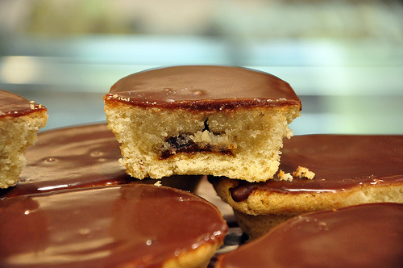

Fruttone Recipe
Ingredients
For the Pasta Frolla:
- 2 ¼ cups cake flour
- 1 ½ cups unbleached all-purpose flour
- 3 grams baking powder
- 1 cup plus 2 tablespoons butter
- 1 ¼ cups granulated sugar
- 5 egg yolks
For the filling:
- About 1 ½ pounds almond paste (see recipe below)
- About 16 ounces pear marmalade
For the almond paste:
- 8 ounces blanched almonds
- 8 ounces (1 ¾ cups) powdered sugar
For the chocolate glaze:
- ½ cup butter
- ¼ cup milk
- 1 tablespoon light corn syrup
- 5 ounces good quality dark chocolate
- 2 teaspoons vanilla extract
- 1 ¾ cups powdered sugar
Instructions
- To make the pasta frolla: In a stand mixer with a paddle attachment, mix together on low speed the flour, baking powder, lard (or butter) and sugar until the mixture is the consistency of peas. Add the eggs yolks and stir together just until the mixture is combined. Divide into two equal mounds and cover each with plastic wrap. Refrigerate for 2 hours before rolling out.
- To make the almond paste: Place the almonds and half of the powdered sugar into a food processor. Process until the almonds are finely ground. Add the rest of the sugar and process until combined and the mixture is homogenous. Set aside for assembly of the fruttone.
- To assemble the fruttone:
Roll the pasta frolla out into a rope about 2 inches in diameter. (You can do this in 2 or 3 parts if you’d like.) Cut the rope into 2-inch rolls. With the palm of your hand, flatten the dough into a round disk about 1/8-inch thick. Press each disk of dough into a mold of its own. The dough should just reach the top of the mold. If there is excess, you can remove it by running a knife along the edges. Place about 1ounce of pear marmalade at the bottom of the mold. (The quickest and cleanest way to do this is by using a pastry bag and piping the pear marmalade into the molds.) On top of the pear marmalade, add the almond paste just to the top of the mold. Run a knife along the top of the mold to ensure that the almond paste is even and level with the top of the mold. Bake at 375°F for 30 minutes. Remove from the oven and place each fruttone upside down on a flat surface until they are cool. (This will flatten out the tops of the fruttone for glazing.)
- To make the chocolate glaze: Make the glaze right before you want to use it. In a saucepan, heat the butter, milk and corn syrup until the butter melts. Add the chocolate and whisk until the chocolate melts. Take off the heat and whisk in the vanilla extract. Whisk in the powdered sugar and pour into a bowl wide enough to dip the fruttone in. Use immediately to glaze the fruttone. The glaze will set in 20-30 minutes.
- To glaze the fruttone: Once the fruttone are cool, dip the tops of them into the chocolate glaze and place right side up. Let the glaze set for approximately 20 minutes. Buon Appetito!
Main Page